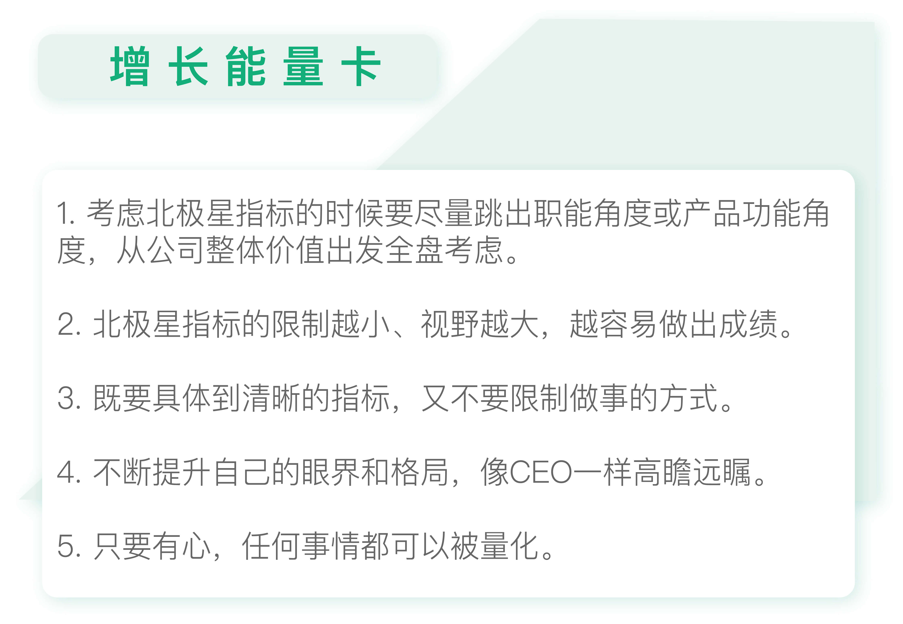

- 00 开篇词 人人都是增长官.md.html
- 01 预习 增长小白如何“弯道超车”？.md.html
- 02 预习 如何理解“增长”？.md.html
- 03 预习 不同职能如何做好增长？.md.html
- 04 预习 做增长如何处理职能间的矛盾？.md.html
- 05 正确目标找不对，天天加班也枉然.md.html
- 06 活学活用北极星指标.md.html
- 07 OKR如何助力增长？.md.html
- 08 不懂用户调研？那就对了！.md.html
- 09 调研目标：在差异性洞察中找到爆破点.md.html
- 10 数据分析：在“花式对比”中发现玄机.md.html
- 11 用户分类：围绕北极星指标细分人群.md.html
- 12 用户访谈：像侦探一样寻找破案线索（上）.md.html
- 13 用户访谈：像侦探一样寻找破案线索（下）.md.html
- 14 提炼用户差异，发现增长契机.md.html
- 15 挖掘产品优势，打破增长瓶颈.md.html
- 16 定位营销差异，抢占用户心智.md.html
- 17 一级方向：找到增长爆破点.md.html
- 18 B端产品如何调研？.md.html
- 19 全局规划增长机会.md.html
- 20 统筹全局的用户增长地图.md.html
- 21 案例解析：定义关键增长指标.md.html
- 22 正负双向洞察，找准切入点.md.html
- 23 二级机会：制定增长策略.md.html
- 24 为一家濒临破产的公司制定增长策略（上）.md.html
- 25 为一家濒临破产的公司制定增长策略（中）.md.html
- 26 为一家濒临破产的公司制定增长策略（下）.md.html
- 27 为什么指标数据怎么优化都不提升？.md.html
- 28 案例解析：打造增长闭环（上）.md.html
- 29 案例解析：打造增长闭环（下）.md.html
- 30 案例解析：唤醒沉睡用户（上）.md.html
- 31 案例解析：唤醒沉睡用户（下）.md.html
- 32 没有分解，就无缘增长.md.html
- 33 四个要点颠覆传统需求文档.md.html
- 34 三级落地：无限场景应用.md.html
- 35 手把手教你设计一次成功的实验（上）.md.html
- 36 手把手教你设计一次成功的实验（下）.md.html
- 37 积少可成多，别针换别墅.md.html
- 38 四级延续：增长组件库案例.md.html
- 39 以用户为中心增长.md.html
- 增长导航图 增长专栏的知识架构是怎样的？.md.html
- 尾声 结束意味着新的开始.md.html
- 预习答疑 你需要一张思维导图吗？.md.html
- 捐赠
06 活学活用北极星指标
你好，我是刘津。
还记得在上一讲中，我介绍的北极星指标的概念吗？没错，北极星指标是在当前阶段高于一切，唯一重要指标或重要的一组互斥指标关系。
理论上来说北极星指标应该由高层提出，但实际上并不是每个公司都有清晰的北极星指标。但只要你足够理解它的概念，你完全有能力找到正确的北极星指标并影响到更多人。
然而在帮助其他人寻找北极星指标的过程中，我发现还是有很多人会在定义这里出现问题。
由于北极星指标非常重要，一旦定义错误，就会影响到后面所有的工作。所以我认为有必要再多讲一些相关的案例，来带你正确理解北极星指标。
从公司整体价值出发
北极星指标代表了整个公司发展的方向，它无疑是高瞻远瞩的。
大多数人意识不到正确的北极星指标，主要是因为他们在考虑北极星指标的时候，是从自己的职能出发、或者是自己负责的产品出发，而非从公司最高价值出发。说白了就是“视野不够开阔”。
不要受限于职能角度
比如，有位电商产品的交互设计师认为该产品的北极星指标是“提升用户的满意度”。很明显，这是从职能角度出发的。
因为对电商产品来说，产品营收或利润至关重要，而“满意度提升”在其中虽然可以起到一定作用，但不起决定性作用。即使能起到决定性作用，也只能作为次级指标或方向，以服务于最重要的指标。
再比如，某金融产品的负责人认为北极星指标是业绩量。但是他忽略了风险和客户体验，因为风险和客服都是其它团队的人负责，似乎并不是他的份内事。长期这样下去，可能导致表面上看业绩数字很漂亮，公司利润却在不断下滑。
出现这样的错误，也是因为他是从自己的职能出发，而非产品整体利益出发。
所以，在考虑北极星指标的时候，一定要从自己的职能角度跳出来，不要受角色的牵绊，要有意识地提升自己的认知维度，从整体价值出发全盘考虑。
不要受限于功能角度
还有一种情况也很常见，就是受限于当前的产品或功能，而不是从公司整体角度考虑。
我有一个学员最近找我咨询，说项目遇到一些问题，但是不知道问题出在哪里。
我首先看了他的北极星指标是“用户购买店家非热门产品的订单量”。很显然这个指标定义的过细了，他之所以这样定指标，是因为目前产品功能就是要让用户多购买店家非热销的产品。这样直接限制了更大的想象空间。
因为这个产品目前还处于从0到1的过程，所以重点应该在于不断探索新方向上，而不是卡死在一个方向上。
所以，一定要跳出当前产品功能的限制，追求最终公司要达成的理想结果。如果他的北极星指标改成“新增订单量”，这个问题就迎刃而解。
也就是说，北极星指标的限制越小、视野越大，越有可能做出突破性的成绩。当然，这很难，所以你可以多和老板沟通，多倾听高层的声音。这也是我在专栏中反复强调的。
你一定听到过“降维打击”这个词，的确是这样，站在低维的角度永远不会理解高维的世界。如果不在同一个维度上，我们将难以有效地和老板对话，也难以在工作中发挥更大价值。
另外也要注意多和不同职能的负责人聊聊，便于开阔视野，避免只见树木不见森林。
要明确无歧义
虽然北极星指标不要有太多限制，但却一定要有明确说明，不要让人产生歧义。
比如某产品经理一开始提出产品的北极星指标是月活跃用户数。但是怎样定义“月活跃”呢？比如强制用户登录算不算活跃度提升？很明显应该是不算的。
因为这样做无法真正提升产品价值，但是表面上看活跃用户数确实上去了。
所以为了大家能够更好的理解并执行，她最终把指标改成：用户数增长的同时月交易率提升。这个指标可以进一步分解为：存量用户月交易率提升+新增用户月交易率提升。
看到这里，我猜想大家会有问题：刚才不是说不要定的太细吗？怎么现在又说要具体了？那怎么区分这两者呢？其实就是既要具体到清晰的指标，又不要限制做事的方式。
比如，你可以说新增用户月交易率提升，但是你不要限定具体怎么提升、通过什么方式提升，这样你明白了吗？
像CEO一样深谋远虑
我们来看一下热门电视剧《琅琊榜》中的靖王是如何在定目标方面完胜竞争对手誉王的。
当时两个人正在讨论赈灾的银子拨付下去，要达到什么样目的，才算灾情平复。
誉王回答的很表面：“灾民有了钱银粮草可以度日，灾情自然平复。”
而靖王却说：“主事之人心中应有全局，须统御上下整合资源，最终的目的就是少死人、不起暴乱、来年春耕不荒，任何一条没达到，灾情就不算平复。”
这段话让皇帝对靖王刮目相看，两个皇子高下立判。
这就好像老板问员工，我们这个季度要达到什么目标？可能产品经理A说我们应该做个改版；而产品经理B说我们要整合资源，减少用户流失并提升新增用户数量。
两个人说的其实都没错，但是思维和格局完全不一样。
这让我想到了在阿里的一段难忘的经历。
当时我们做的是一个B端的大数据产品，用户体验很差，但老板一直不在意。
突然有一天老板提出要做易用性优化，当时我非常兴奋，以为机会来了，因为这正是我擅长的地方。
我非常认真地准备了详细的方案和推导过程，但是并没有得到老板的认同。老板选择了另一个同事的“打补丁”方案，也就是在每个页面上都加一段引导，告诉用户下一步该怎么操作。
我当时觉得这很难理解，因为产品当时的体验已经非常差了，如果再加上没完没了的引导，这不雪上加霜吗？
但老板很平静的说：“你有想过这次改版的目标吗？你知道我们下个月有个大型的运营活动吗？到时会有好几百个开发者涌入我们的平台完成项目，你的方案一个月能开发完吗？能解决我产品的生死问题吗？”
我当时无言以对，即便我的方案很专业、无懈可击，那又能怎样呢？它无法在当前阶段为产品创造真正的价值，就好像誉王只是从表面回答问题，没有更多的深谋远虑。
所以定义或理解北极星指标，除了学习上一篇文章中的理论知识外，我们还需要不断培养自己的眼界和格局，避免被自己的旧有思想限制住。
一切皆可“量化”
很多人苦恼一个问题，就是价值如何用数字来量化。其实只要花点心思，应用好北极星指标，任何内容都是可以被“量化”的。
比如我的理想是成为一个改变行业的人，那么我可以给自己制定当前阶段的北极星指标：今年培养100个能掌握这套理论的人。
不仅仅是在工作中，北极星指标在生活中也完全可以应用。
我朋友的妹妹今年在发愁报志愿的问题，请朋友给予指导。朋友想到了我这套理论，就问妹妹未来想过什么样的生活？想成为一个什么样的人？这其实就是在问妹妹的价值导向。
朋友与妹妹一直讨论，深挖到底后，发现妹妹只想过平凡人的生活，但是想离妈妈远一点，过得更自由洒脱一些。
所以，最后妹妹就选择了几所外地的目标院校，而能考上这样的学校就是妹妹当前阶段的北极星指标。
还有一个很好玩的例子，叫“含咪率”。
有一天我朋友神秘兮兮的问我：你的含咪率是多少？我说什么是含咪率？她说就是你微信好友里关注咪蒙公众号的比例，你点击咪蒙的公众号可以看到你有多少好友关注了她，除以你的好友总人数就行了。
我依照她说的除了一下，她说你要提升你的人脉质量啊，你的含咪率太高了。
当然，这是个玩笑。
不过我之前从没想过，一个人的微信好友质量居然可以用这种方式来衡量。假设你认为今年最重要的事情是提升人脉质量，那么对应的北极星指标就是降低“含咪率”，是不是很有意思？
可见只要走心，真的是任何事情都可以被“量化”。

思考题
最后，回顾一下上节课的思考题，看看你的北极星指标够高瞻远瞩、够清晰无歧义吗？有没有需要调整的地方？
欢迎把你的思考和疑问通过留言分享出来，与我和其他同学一起讨论。如果你觉得有所收获，也欢迎把文章分享给你的朋友。
© 2019 - 2023 Liangliang Lee. Powered by gin and hexo-theme-book.